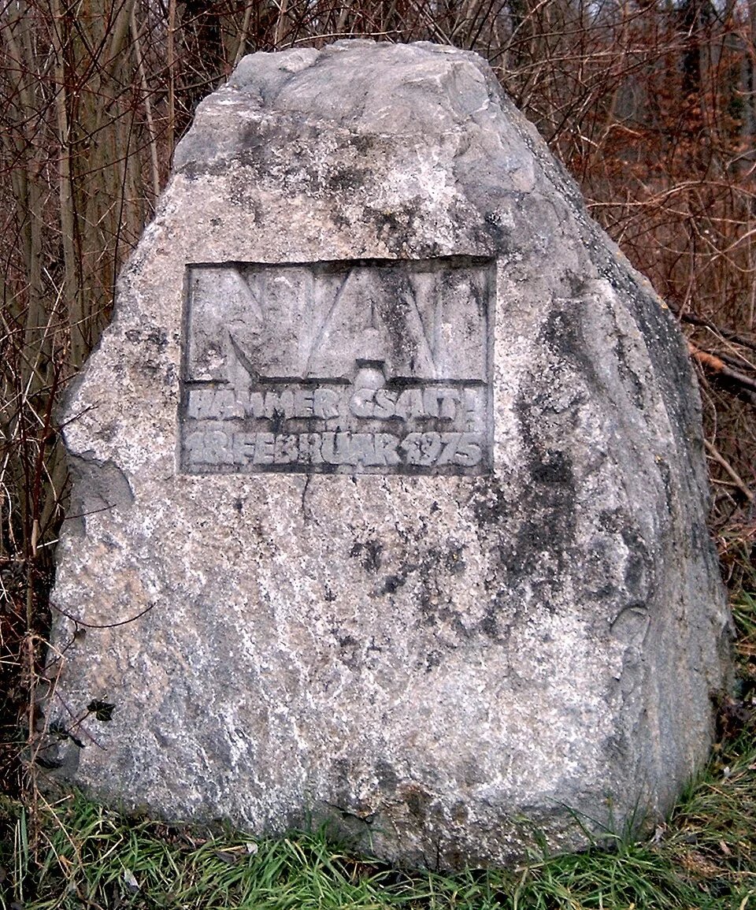
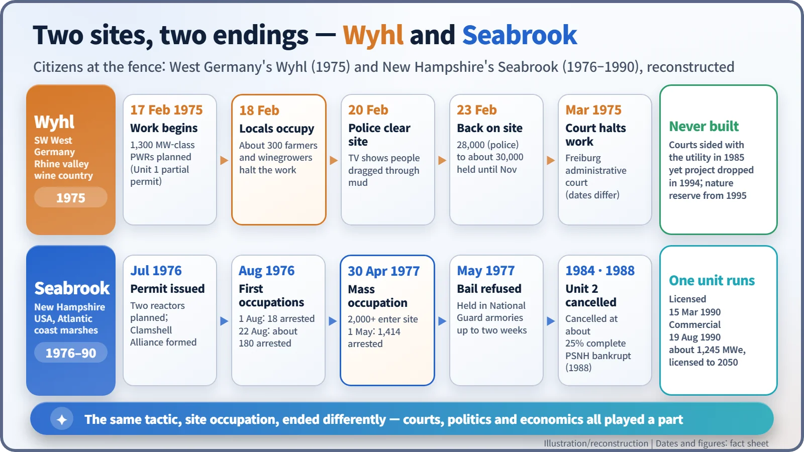
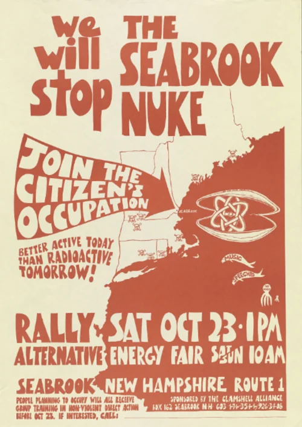
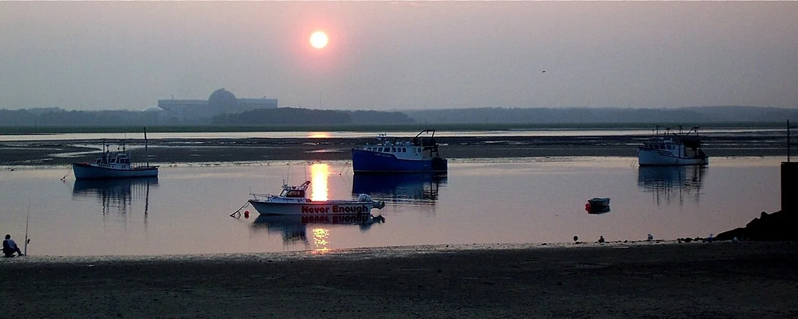

Nuclear History · 247
"No, We Said!" — Vintners, Clams and the Anti-Nuclear Movement at Wyhl and Seabrook
One site occupation ended with a forest and a nature reserve, the other with 1,414 arrests and a single reactor that still runs; both made community consent part of the nuclear debate.
On 18 February 1975, about 300 farmers and winegrowers walked onto the construction site of a nuclear power plant at Wyhl on the Rhine and stopped the work; the plant was never built. Two years later, across the Atlantic, the Clamshell Alliance occupied the Seabrook site in New Hampshire and 1,414 people were arrested; there one of two reactors was finished and runs today. Together the two sites show how community consent became a test for nuclear power.
"No, we said!"
"Nai hämmer gsait!" In the Alemannic dialect of south-western Germany, that means "No, we said!" The phrase is carved on a stone in the woods near Wyhl, a small village on the Rhine. The date on the stone is 18 February 1975, the day after construction began on a nuclear power plant there. What happened that morning, and why did people want it remembered in stone?

When a power plant became a local affair
In the 1970s, West Germany and the United States were building nuclear plants quickly. At the same time, the environmental movement and demands for citizen participation were growing. Governments and utilities chose the sites; residents were informed afterwards. More and more of them objected to that order of things. Nuclear power was becoming not only a technical question but also a question of who gets to decide.
The upper Rhine valley saw this early. According to historian Stephen Milder, the region's first mass anti-reactor protest took place in 1971 at Fessenheim in Alsace, and from September 1974 German and French residents together occupied the site of a lead-processing plant under construction at Marckolsheim, also in Alsace. The Wyhl project itself had first been planned near Breisach and was moved after local opposition (the new site was announced in July 1973). [1] [2]
Wyhl: ten days in February 1975
Two 1,300-megawatt pressurized water reactors were planned at Wyhl. The first partial construction permit was issued on 22 January 1975, and earthworks began on 17 February. [2]
The next morning about 300 local people, most of them middle-aged farmers and winegrowers, walked onto the site. In Milder's account, "every machine [on the site] was shut down" within an hour. They linked their fears about the reactor with worries about the future of local viticulture, and they felt the authorities were shutting down public debate. [1]
Two days later, on 20 February, police removed the occupiers. Television pictures of farmers and their wives being dragged through the mud turned a rural dispute into a national issue. On 23 February a rally drew 28,000 people by police count (other sources say about 30,000), and the crowd occupied the site again. This time the state government did not try to clear it. The occupation lasted until November 1975. [2] [3]
The government's case was clear too. On 27 February, Minister-President Hans Filbinger told the state parliament (in translation): "Without the Wyhl nuclear power plant, the first lights will go out in Baden-Württemberg by the end of the decade." [2]
Courts went back and forth; the forest won
In March 1975 the administrative court in Freiburg stopped construction (sources give the date as either 14 or 21 March). The legal fight then swung back and forth. In 1977 the Freiburg court ruled for the plaintiffs, finding that precautions against accidents were inadequate; in 1982 a higher court overturned that ruling; and in December 1985 the Federal Administrative Court dismissed the plaintiffs' final appeal. [2]
So Wyhl was not stopped by a final court verdict. In 1983 the state government said the plant would not be needed before 1993, and in 1994 the project was officially abandoned. Since 1995 the site has been a nature reserve. Wyhl is often called the first great success of the German anti-nuclear movement, and it became the template for later confrontations at Brokdorf and Gorleben. [2] [3]

Across the Atlantic: the Clamshell Alliance
On the short New Hampshire coastline, next to salt marshes, the Public Service Company of New Hampshire (PSNH) planned two reactors at Seabrook. When the construction permit came in July 1976, New England anti-nuclear groups formed the Clamshell Alliance. Members called themselves "Clams." [4] [6]
In August 1976 two occupations led to 18 and then about 180 arrests. Then on Saturday 30 April 1977, more than 2,000 people walked onto the site and pitched tents. The next day police arrested 1,414 of them for criminal trespass, one of the largest mass arrests in American history. [4] [6]
Governor Meldrim Thomson Jr. treated the occupation as plain lawbreaking and had bail set at $500. Many defendants refused bail in solidarity and were held in National Guard armories and jails for up to two weeks. As the bill for detaining them ran into tens of thousands of dollars, 550 were released without bail on 13 May. [6]
Seabrook's lasting legacy was a way of organizing. Participants received nonviolence training and acted in "affinity groups" of about 5 to 20 people that made decisions by consensus. Groups across the country, such as the Abalone Alliance in California, copied the model. [6]

One plant built, one never built
Seabrook ended differently from Wyhl. Unit 2 was cancelled in 1984 at about 25% completion, and PSNH went bankrupt in 1988. Unit 1 received its operating license on 15 March 1990 and entered commercial operation on 19 August 1990. A project once expected to cost under $1 billion ended up approaching $7 billion. The protests alone do not explain that: high interest rates, inflation, tighter regulation, slowing demand growth and a long dispute over emergency evacuation plans all played a part. Unit 1 still produces about 1,245 megawatts and is licensed to operate until 2050. [5] [4]

Who decides?
Views of both sites remain divided. Some argue that occupying a lawful construction site bypassed due process; others see nonviolent civil disobedience that brought local voices into energy policy. What is clear is that from this point on, the future of nuclear power was judged not only by safety standards and economics, but also by whether communities consented.